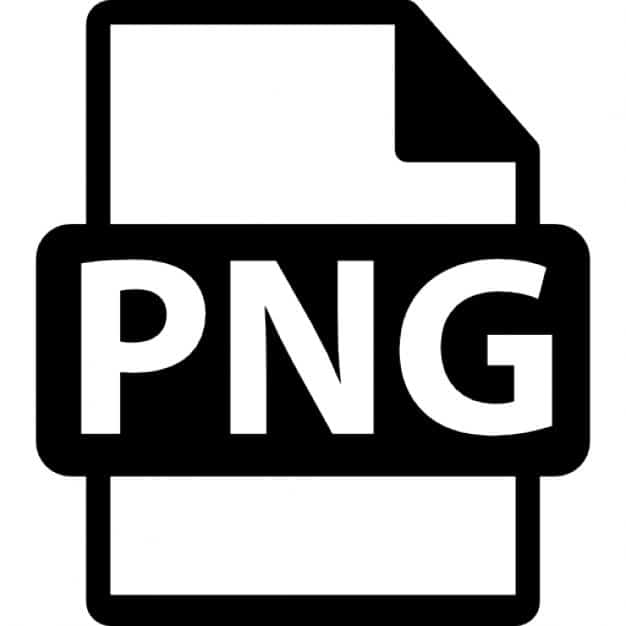

Las imágenes suelen tener extensión .jpg o .jpeg y es el formato más utilizado actualmente. JPG dedica, en principio, 24 bits a cada píxel para almacenar su información, con lo que puede trabajarse con más de 16 millones de colores distintos. JPG dedica, en principio, 24 bits a cada píxel para almacenar su información, con lo que puede trabajarse con más de 16 millones de colores distintos.JPG permite guardar las imágenes en modo progresivo, es decir, que la imagen se carga en varias fases, una opción de interés cuando se trabaja con conexiones lentas, aunque produce archivos algo más pesados. También es posible suavizar la imagen para evitar bordes demasiado pixelados, aunque ello suele causar el desenfoque del conjunto de la imagen.El formato JPG es el recomendado para trabajar con imágenes con miles o millones de colores: fotografías, imágenes con gradientes... Pero no es adecuado para imágenes con texto, formas simples o que contengan grandes bloques monocolor porque genera bordes llenos de ruido. Además, una imagen JPEG no puede soportar transparencias.
Fue el primer formato de imagen utilizado en la Web, ya que se creó pensando precisamente en un método de comprimir imágenes para ser compartidas en redes de ordenadores. Las imágenes tienen la extensión .gif. GIF es un formato de compresión sin pérdidas, es decir, que permite la reconstrucción del original pues guarda la información de color y transparencia de cada píxel y no distorsiona la imagen. olo trabaja con 8 bits para cada píxel, lo que permite disponer únicamente de 256 colores distintos. Pero GIF tiene una característica que le hace único dentro de estos tres formatos de imagen: permite ser animado. También es posible realizar imágenes con fondo transparente aunque en una implementación algo limitada, ya que solo puede tener dos valores: todos los píxeles son transparentes u opacos, no se puede especificar un valor de transparencia para cada uno de ellos. GIF usa 256 colores, es posible variar esta paleta de colores y definir que use 32, 16 u 8 colores únicamente, consiguiendo tamaños de imagen aún menores.También puede crearse un GIF entrelazado que permite a dispositivos lentos cargar una imagen que se construye de forma gradual en la pantalla sin esperar a que se pinte línea a línea.

La extensión PNG es la más usada para iconos o marcas. No pudo ser aprovechada durante muchos años ya que IExplorer no reconocía su mayor ventaja: la transparencia. Desde que los diseñadores dejamos de preocuparnos por las versiones anteriores al IE8, lo estamos aprovechando realmente. La transparencia de PNG a diferencia del GIF no tiene halo, logrando una calidad de imagen mucho mayor y simplificando el maquetado, permitiendo independizar las imágenes de sus fondos. El PNG tiene dos opciones: PNG8 (con paleta de color reducida hasta 256 colores) y el PNG24 ideal para transparencias.
Es un formato gráfico que se utiliza para la transmisión de datos impresos y de imágenes de alta resolución. TIFF también soporta el modelo de color CMYKy permite una profundidad de color de hasta 16 bits para cada canal de color (la profundidad total asciende a 48 bits). Gracias a sus características, TIFF se ha impuesto como un estándar común para las imágenes en el que la calidad desempeña un papel más importante que el tamaño de los archivos.Aplicación recomendada: transmisión de imágenes de calidad y con alta resolución para las impresiones.
Es el único formato vectorial y por lo tanto escalable para web con la enorme ventaja que eso significa para hacer un sitio adaptable. Se está empezando a usar recién ahora ya que el IE8 no lo reconoce. El archivo SVG se guarda directamente desde Illustrator y el resultado es un archivo que se puede ver en el navegador, pero que también se puede abrir en el Sublime porque es puro código. Esto le da infinitas posibilidades de uso para web, especialmente combinado con el lenguaje javascript.